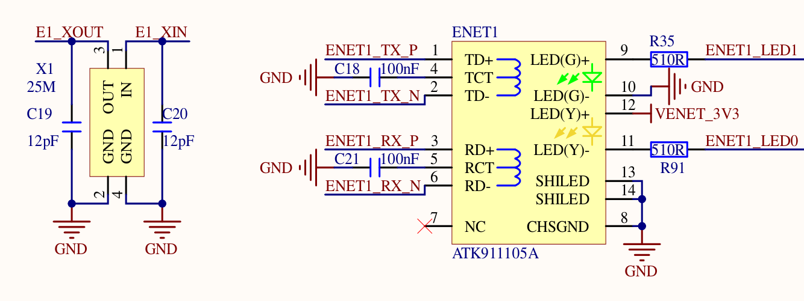
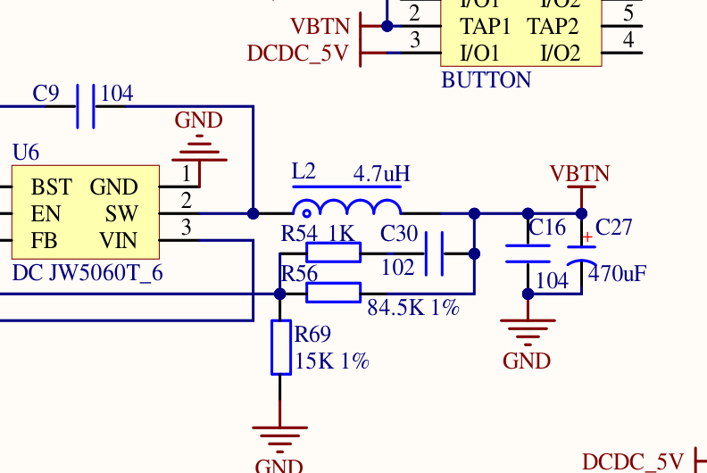
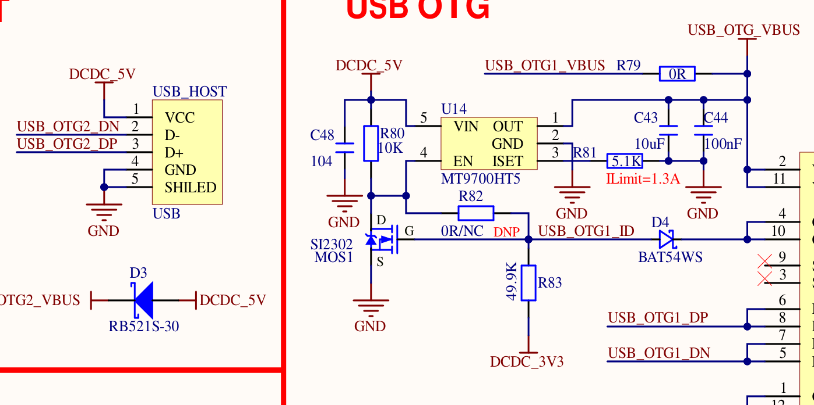

MINI 第 3–4 页：以太网与电源树，一页看全板
最后两页是底线：p3 把「网线」变成「RMII 信号」，p4 把「墙上的 12V」变成「板上的 5V 与 3.3V」。这两页把前面所有章节串起来——电源错，网口不亮；网口错，系统看起来「像启动失败」。读完这一章，你应该能在 10 分钟内说出一块陌生板子的电源树与信号地图。

读完这一章，你应该能
- 说清 PHY、变压器、RJ45 三者的分工，以及 RMII 与 MII 的区别
- 解释 25MHz 晶振为什么用 12pF、RBIAS 2.49K 为什么必须 1%
- 说出 L3 220R@2A 与 L4 120R@2A 为什么取不同值
- 用反馈电阻反推两片 DCJW5060 的输出，并解释前馈 R52 1K+C11 102 的作用
- 画出全板电源树与信号地图，指出三条最关键的依赖链
3.12.1以太网：三块东西各管一段
网口不是一颗芯片，而是三块：
| 部件 | 本板位号 | 负责 | 不负责 |
|---|---|---|---|
| PHY | U11 SR8201F | 把 RMII 数字信号变成模拟差分（MLT-3 编码），自协商 10/100M | 不隔离、不驱动长线 |
| 网络变压器 | ATK9111A | 电气隔离（1.5kV）、共模抑制、阻抗 1:1 变换 | 不做协议 |
| RJ45 | 集成变压器座 | 机械连接、LED 指示 | 不处理信号 |
RMII 与 MII：MII 需要 4 位数据 + 独立 TX/RX 时钟（共 16 根线）；RMII 只用 2 位数据 + 50MHz 参考时钟（7 根线）。本板用 RMII，所以 PHY 的 RX_DV(IPD) 脚要按图注配置为 RMII 模式（图上明确写「0 = MII mode，1 = RMII mode」），RXD3(IPD) 配置 TXC 方向（0=输出，1=输入）。这两个脚是「用硬件跳线选模式」的典型：读图时看到 (IPD) 就表示「内部默认下拉，靠外部上拉改值」。
PHY 地址 0x01：图上写「PHY ADDR: 0x01」，由 LED0/PHYAD0 与 LED1/PHYAD1 两个脚的电平决定（表：00→0x00，01→0x01，10→0x02，11→0x03）。Linux 设备树里 phy-handle 必须与这个地址一致，否则 mdio 读不到 PHY，网口起不来——这是最常见的「网口不亮」原因之一。
3.12.225MHz、12pF 与 2.49K
X1 是 25MHz 晶振（RMII 的参考时钟由 PHY 内部 PLL 从 25MHz 倍频到 50MHz），两端 C19/C20 12pF：CL=12/2+3≈9pF，对应 9pF 规格晶振。频率偏差会直接变成 RMII 时钟偏差，导致 CRC 错包率上升。
R64 2.49K 接 RBIAS 到地，是 PHY 内部偏置电流的「基准电阻」。它决定发送驱动的幅度与接收阈值，必须 1%；用 5% 会让眼图幅度偏差 ±5%，长线（>50m）时丢包。
R31 22Ω 串在 TX_CLK（25MHz 输出给 MAC 的时钟），与前面 LCD PCLK 同理：时钟线要串阻抑制振铃。R63 10K 是 RESET 上拉，保证 PHY 默认不复位；R33/R34 4.7K 上拉 MDC/MDIO，因为 MDIO 是双向开漏线。
3.12.3L3 220R 与 L4 120R：两种磁珠不是随便选

新窗口打开两颗磁珠都用在电源上，但取值不同：
- L3 220Ω@100MHz、2A、DCR 0.05Ω：给 VENET_3V3（PHY 的 IO 电源）滤波，阻值大、抑制高频噪声强；
- L4 120Ω@2A：给 DVDD33/AVDD33（PHY 内部数字/模拟）滤波，阻值小一些，避免在负载跳变时产生过大压降。
关键约束：磁珠的额定电流必须大于该路最大电流（这里是 2A，远大于 PHY 的 200mA），否则磁珠饱和后阻抗崩塌，等于一根导线；DCR 决定直流压降，0.05Ω×0.2A=10mV，可忽略。
网口 LED：R35/R91 510Ω 限流，3.3V 下约 6mA，亮度足够且不超 LED 额定。LED 的阳极接 VENET_3V3、阴极由 PHY 的 LED 脚拉低点亮——这也是「低有效」的常见画法。
3.12.4电源树：从墙上的 12V 到板上的 3.3V

新窗口打开整条链是这样的：
- DC_IN1（电源座）→ F1 2A 保险 → VD2 SS34（防反接，正向 0.5V 压降）→ VM（约 12V）
- VM → U6 DCJW5060T_6（Buck，L2 4.7µH）→ 5V 档（反馈 84.5K/15K）
- 5V → U4 DCJW5060T_6（Buck，L1 4.7µH）→ DCDC_3V3（反馈 49.9K/15K）
- 3.3V → 核心板 U7/U6/U8/U9/U11/U12 六路 → SoC/DDR/eMMC/PHY
- 5V → USB Host 开关 U14、CAN 收发器 U5、RS485 的 VCC
反推验证：DCJW5060 的反馈基准约 0.765V。两路分别验算：
5V 档：0.765×(1+84.5/15)=0.765×6.633=5.07V
3.3V 档：0.765×(1+49.9/15)=0.765×4.327=3.31V
两路都落在标称值 ±2% 内，说明这个基准值反推正确。这也是「读图能验证设计」的典型例子：不用信标签，用电阻算一遍。
前馈 R54 1K + C30 102：跨在「上反馈电阻」两端（从 SW 节点到 FB），在反馈环路里制造一个零点，抵消输出电容的极点，提升负载跳变时的响应。零点频率 f≈1/(2π×1k×1n)=159kHz，正好落在环路带宽附近。
470µF 输出电容：为什么这么大？因为下一级（3.3V Buck 与核心板）在启动瞬间要抽脉冲电流，5V 母线必须有储能。C16 470µF 也决定了上电时的浪涌：12V→5V 启动瞬间，470µF 从 0 充到 5V 需要约 2.35mC 电荷，若限流 1A，充电时间约 2.4ms。
3.12.5保护：SS34、两个 TVS、保险丝
顺序很重要：保险丝在前、TVS 在后。故障时 TVS 先钳位、保险丝再熔断，两者配合才能既保护又不误断。
- VD2 SS34（3A 肖特基）：防反接。接反时它反偏，整板不工作；正常时正向压降 0.5V，12V 变成 11.5V，损耗 0.5×I。
- D1 SMBJ5.0A：并在 5V 母线上，钳位约 9.2V（@1A），吸收浪涌；
- D2 SMBJ3.3A：并在 3.3V 母线上，钳位约 6.5V。
判据：TVS 的钳位电压必须低于后级芯片的绝对最大电压。SMBJ5.0A 钳位 9.2V，而后级 DCJW5060 的 VIN 绝对最大通常 30V+，安全；SMBJ3.3A 钳位 6.5V，而 3.3V 域芯片绝对最大多为 4.0V——这里其实有风险，6.5V 已超过多数 3.3V 器件的极限。实际靠「TVS 动作时间 ns 级 + 保险丝」的组合控制能量，但严格设计应选钳位更低的器件（如 SMBJ3.3A 的低钳位版本或再加一级限流）。读图时能发现这一点，就已经超过「看懂连线」的层次。
3.12.6USB 与 CH340：两条独立路径

新窗口打开本板有两个 USB 口，功能完全不同：
| 口 | 路径 | 用途 |
|---|---|---|
| USB HOST（A 型） | 5V → U14 MT9700（限流 1.3A）→ VBUS；D-/D+ 接 USB_OTG2 | 插 U 盘/键鼠，SoC 作主机 |
| USB OTG（Type-C） | VBUS 经 MOS1 SI2302 切换；CC1/CC2 各 5.1K 下拉 | 作设备（连 PC）或供电 |
| USB 串口 | CH340C ↔ SGM3157 ↔ UART1_TXD/RXD | 调试控制台，与 OTG 共用 Type-C |
R77/R78 5.1K 是 Type-C 的 CC 下拉，告诉充电器「我是设备，请给 5V」；R81 5.1K 设定 MT9700 的限流 1.3A（Ilimit=K/R）；R84 10K / R86 15K 是 CH340 的分压/配置，决定其工作模式。
为什么 CH340 要单独一颗 XC6206（U7）？因为 CH340 的 V3 脚需要 3.3V（内部 LDO 输出），外部再给一路 3.3V 可以让它稳定工作；同时 UART_3V3 与主 3.3V 隔离，避免 USB 插拔的浪涌影响 SoC。
SGM3157 的作用：UART1 既接调试串口（排针），又接 CH340。两颗模拟开关由 SGM_CTRL 控制，实现「二选一」，避免两个发送源对打。这与 3.11 节 LCD 上的用法完全一样。
3.12.7把 12 页压成一张地图
现在回到全局。整块板可以这样记：
| 层 | 核心板（8 页） | 底板（4 页） |
|---|---|---|
| 电源 | p1 六路、p2 CAP 脚 | p4 12V→5V→3.3V、TVS、USB 供电 |
| 计算 | p3 DDR、p4 存储 | — |
| 接口 | p5 LCD/ENET/GPIO/USB/SD、p6 控制与时钟 | p2 TF/CAN/485/屏/摄像头、p3 以太网 |
| 连接 | p7 BOOT、p8 60pin | p1 60pin 与拨码 |
三条最关键的依赖链（排错时按链走）：
- 启动链：12V → 5V → 3.3V → SNVS 3.3V → POR_B 释放 → 24MHz → BOOT 采样 → 存储读取 → 串口输出。
- 显示链：3.3V → NVCC_LCDIF → PCLK（R43）→ 24 根数据 → 40pin 座 → 屏；背光独立（BLT_PWM）。
- 网络链：3.3V → L3/L4 → PHY → 25MHz → 变压器 → RJ45；MDIO 地址必须与设备树一致。
任何一条链断了，现象都很像「板子坏了」，但定位方法完全不同：启动链看电压与复位，显示链看时钟与数据，网络链看 PHY 地址与 LED。这就是「会读原理图」和「会背原理图」的区别。